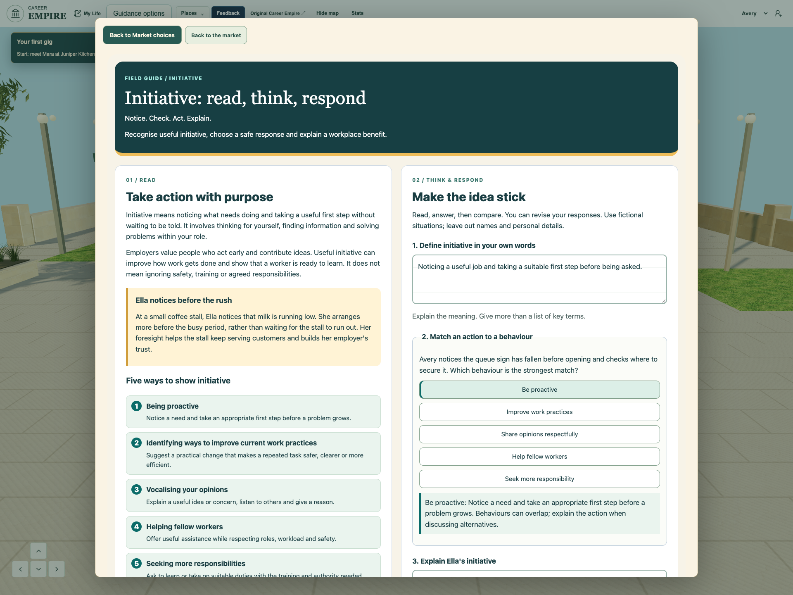
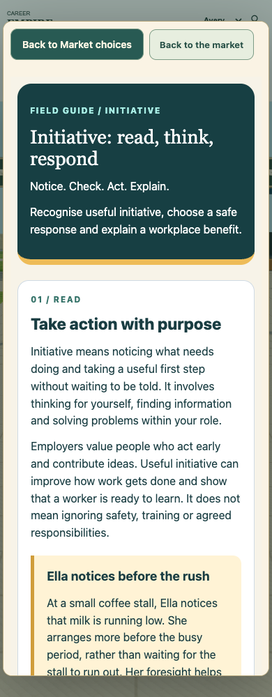

Blueprint readerInitiative Notes: read, think, respond
Request and source inspection
Tania requested Carolan text with worksheet-style multiple-choice and written response blocks in the game Notes, followed by an actual tested-game screenshot for the existing CEAWA Notes owner. All eight supplied originals were materialized with Library identity and visually inspected: Carolan printed24, section2.05, and seven older slides. The page names Michael Carolan, copyright2025 DELIVER Educational Consulting and its licensors, licensed for Emmanuel Catholic College. The existing shared library explicitly excludes original textbook pages/illustrations from public games. Originals remain private; the public reading is an attributed adaptation, retelling Ella’s coffee-stall example and retaining the five behaviours. No new artwork or copied textbook page is bundled.
Before and after
The existing shared guide began with vocabulary cards and lacked a reading/response worksheet. The new responsive Notes opening pairs a readable attributed adaptation with definition, shared-bank behaviour choice, Ella explanation and benefit choice; the original transfer response, worked thinking, vocabulary, safety decisions and other practice remain available. It uses warm paper, teal panels, numbered behaviours and lined response areas. Existing feedback explains a reason and allows revision. A Journal Lecture notes shortcut now returns explicitly to the journal; entrance Notes returns to Market choices. Close returns to the world. The first browser check exposed the inherited480px dialog; that layout was corrected before final qualification.
Curriculum, teaching and shared references
The exact existing shared library remains initiative-learning-r1 with unchanged SHAae97e51da217aca0cd8d4b7f438afea53a19e3fb0ff63cbf6009d7f56df36265. Shared term/check/source IDs remain common to Initiative and Careers Archon. CEM12-U3-EB-01 receives source-informed explanation and a written definition; EB-02 retains all five source-labelled behaviours plus shared-bank comparisons; EB-03 receives an action-to-effect explanation and the existing efficiency check, with broader benefit vocabulary/practice retained. This is authored teaching and formative practice, not proof of transfer, all nested requirements or formal assessment. Existing2027 baseline, reciprocal mappings, timing and remaining teacher checks are preserved. Older slides inform definition/scenario/benefit activities; their broad innovation material does not expand this bounded Notes task.
Drafts, privacy and recovery
All answers remain within the existing same learner/run draft string, library revision and storage boundary. A versioned text envelope preserves multiple responses and selected choices, restores old plain-text explanations into their original transfer field, and never grades written work by keywords. Restoring choices does not duplicate attempts. Guest runs retain drafts only in document memory; save text explicitly explains the tab-only boundary and unconfirmed teacher sync. Structured drafts over4000 characters are refused before the existing host slice can corrupt JSON, while full edits remain available for the visit. Malformed old text is recoverable. No backend, provider, account, permission, retention or security setting is changed; fictional responses only.
Exact qualification
Final source checks pass;386 unit tests across82 files pass with original limits, including four migration/round-trip/invalid/limit regressions. The final index manifest verifies352 runtime hashes and105 imports. Actual-game staged frontend checks at1280/390 and presentation1920 pass reading/five behaviours, wrong-then-correct feedback, three written responses, Back retention, no duplicate attempts, Close/Journal reopen, contextual return, Archon lobby and same run. There are no page errors, missing responses, browser Storage API calls or backend requests during the bounded guest checks. A separate real-adapter browser fixture passes legacy migration, save failure, learner isolation, retry, over-limit preservation and Escape cleanup. Initial close-event timing and missing Journal-route findings remain retained as dated failed runs. Safari, physical touch, student learning and classroom acceptance are unverified.
Release and ownership
Owner: Integrate and test Initiative, sole game source/release integrator. Exact11 staged versions at7597b1a are listed below. The current Archon release, private capabilities, service, cleanup and existing Exit are preserved. User executing-chat approval remains the release authority; normal published integration/receipt guards remain mandatory. Game publication is pending this source review and is not implied by a successful build. Separately staged CI f156c32 and queued Chapel/EST/portfolio/Flyover work are excluded. CEAWA screenshot integration belongs to the existing presentation owner; this task must not overwrite their active source. Tania live review and presentation publication remain separate.
Security and school boundary
This changes how existing free-text Notes and existing practice choices are rendered and encoded inside the same learner-scoped draft; it does not add a collection category, remote collection, identifiers, destination, storage key, third party or teacher transport. Guest zero-storage/zero-backend checks and injected save-failure/isolation tests verify that narrow boundary. Existing school-deployment/ST4S gaps are not certified or waived. Private supplied source pages and browser-seat capabilities are excluded from public output.
Implemented game captures

Implemented and tested staged frontend; game publication and Tania acceptance are separate.
Implemented and tested staged frontend; game publication and Tania acceptance are separate.Exact source files
modules/initiative/parallel/learning/lesson.css 100644:738f272fd32a8ac8fc4a56f1671918d4852d7270
modules/initiative/parallel/learning/lesson.mjs 100644:3f52c0fb4e0286b80419b056b1352433d90ab8b9
modules/initiative/parallel/learning/notes-worksheet.mjs 100644:782452599936f7ada7dbd0f813ade8e3307d7a91
playable-3d/app.js 100644:d608909250106262f3aecb3b83f22fad776f80ca
playable-3d/guest-shell.mjs 100644:7bb9a61ec86c60f2044b32084af2a80ddd7667ae
playable-3d/index.html 100644:01e7cb73b72ecee71020d9bf43f4371ddde36eb3
playable-3d/initiative-market.mjs 100644:fb63dbaea1b955eca613c0a0db5670134fb8402b
playable-3d/market-learning-routes.mjs 100644:b8c5830707ded60c6b942739f362b54c85827c85
playable-3d/night-market.js 100644:386cd202eafe61d435c5796d26725cb99dfa06b7
playable-3d/release-manifest.json 100644:dde9fdf1ca917a0ebc8c9df8b22dc309c119d652
tests/unit/notes-worksheet.test.mjs 100644:0199e9f30fcca4d52e01ebf18e0cb1c77d2c45a2
Publication blocked
Automatic approval review rejected publication of the new Notes integration and screenshots to the public Blueprint because the in-game worksheet and CEAWA screenshot request did not explicitly authorize this external publication. The command did not execute; no journal or public change was made. Public Blueprint remains169c52bb03189231ce6caf7d296a073ad1fc0d56; live game remains7597b1a. No Notes receipt, game commit or push was attempted.
Publication approval verified
## Publication approval verified — 12 November 2026
The authenticated owner replied yes at15:28:58UTC to the exact request to publish the supporting Notes integration record/screenshots to the public Blueprint, then release the worksheet in the game. The executing integrator independently read both messages. This resolves the earlier missing-authorization rejection; the earlier command did not execute and was not retried before this new evidence. Both remotes remain at the reviewed base. All11 candidate hashes and actual staged bindings match the previously qualified386/82,352/105 and desktop/phone/presentation browser evidence. No new product bytes were authored. Licensed originals remain private; the reading is an attributed adaptation. Normal guard, genuine receipt and independent live verification still precede any release claim.